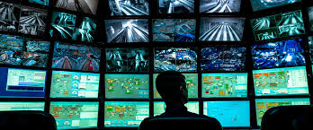

Plataforma educativa integral enfocada en la arquitectura, normativas internacionales y despliegue físico de infraestructuras de telecomunicaciones estandarizadas para entornos corporativos.
El cableado estructurado es un sistema de conectividad físico y estandarizado que proporciona una infraestructura de telecomunicaciones unificada para la transmisión de voz, datos y video dentro de un edificio o campus universitario. Su diseño se rige estrictamente por normativas internacionales, como los estándares de la TIA/EIA, garantizando un ecosistema tecnológico ordenado y predecible.
A diferencia de las instalaciones convencionales punto a punto, esta arquitectura modular asegura el máximo rendimiento de ancho de banda, flexibilidad operativa a largo plazo y compatibilidad universal, permitiendo integrar equipos activos de cualquier fabricante del mercado sin comprometer la integridad de la señal.
Facilita la incorporación, reubicación o actualización de nodos y equipos de red sin necesidad de intervenir el cableado troncal ni interrumpir los servicios críticos. Esta adaptabilidad es fundamental para organizaciones sometidas a un crecimiento constante o reestructuración de áreas de trabajo.
Al utilizar una topología física en estrella, cualquier problema de conectividad queda aislado en su respectivo segmento o enlace permanente. Esto reduce drásticamente los tiempos de diagnóstico técnico y evita la caída generalizada de la red durante incidentes locales.
Se proyecta que un sistema estructurado bien diseñado ofrezca una vida útil operativa de entre 15 y 20 años. Al soportar múltiples generaciones sucesivas de hardware y protocolos de red, se consolida como la inversión tecnológica fundacional más rentable a largo plazo.
La convergencia de todos los enlaces en los cuartos de telecomunicaciones mediante paneles de parcheo permite un control absoluto. Esta organización estructurada facilita el mantenimiento preventivo, las auditorías y elimina los riesgos del desorden de cables.
Representa la evolución definitiva de las comunicaciones corporativas, transformando la voz en paquetes de datos. Este servicio elimina por completo la necesidad de redes telefónicas paralelas, centralizando la gestión en los mismos switches y reduciendo exponencialmente los costos operativos de la empresa.

Aprovecha el ancho de banda del cableado de cobre o fibra para la transmisión de video de alta definición. Mediante la tecnología PoE (Power over Ethernet), las cámaras reciben energía y datos por el mismo cable, logrando un monitoreo en tiempo real altamente seguro y centralizado.